Lista de Exercícios
Peito
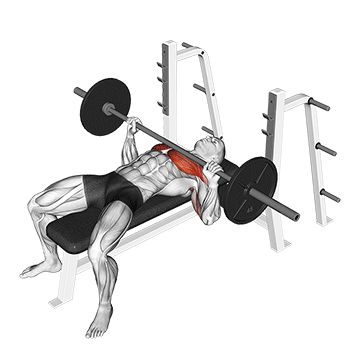
Como fazer:
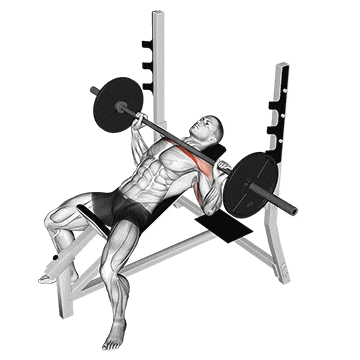
Como fazer:

Como fazer:
Costas
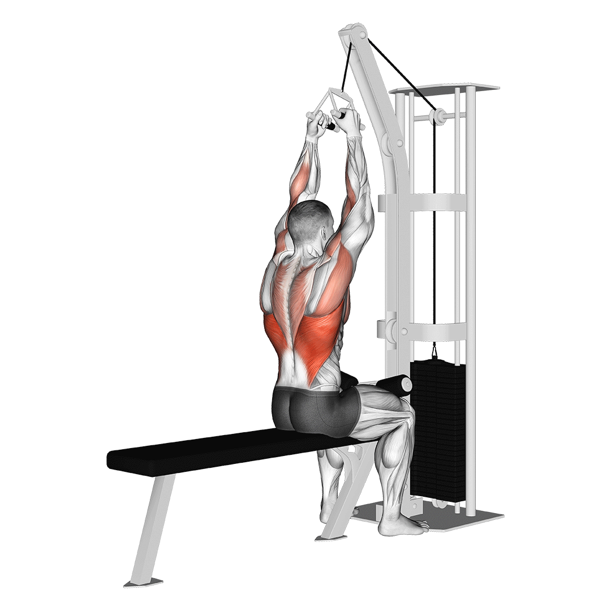
Como fazer:
- Sente-se na máquina com os joelhos fixos
- Segure a barra com pegada aberta
- Puxe a barra até a altura do peito
- Retorne controladamente à posição inicial
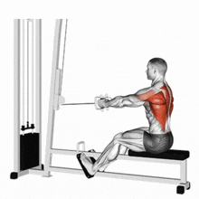
Como fazer:
- Sente-se na máquina de remada baixa com os pés apoiados
- Segure as alças com as mãos em supinado (palmas para cima)
- Puxe as alças em direção ao abdômen, mantendo os cotovelos próximos ao corpo
- Retorne lentamente à posição inicial
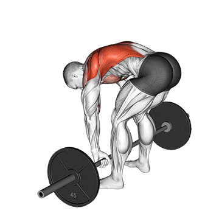
Como fazer:
- Fique em pé com os pés na largura dos ombros e joelhos levemente flexionados
- Incline o tronco para frente, mantendo as costas retas
- Segure a barra com as mãos em pronado e puxe em direção ao abdômen
- Retorne lentamente à posição inicial
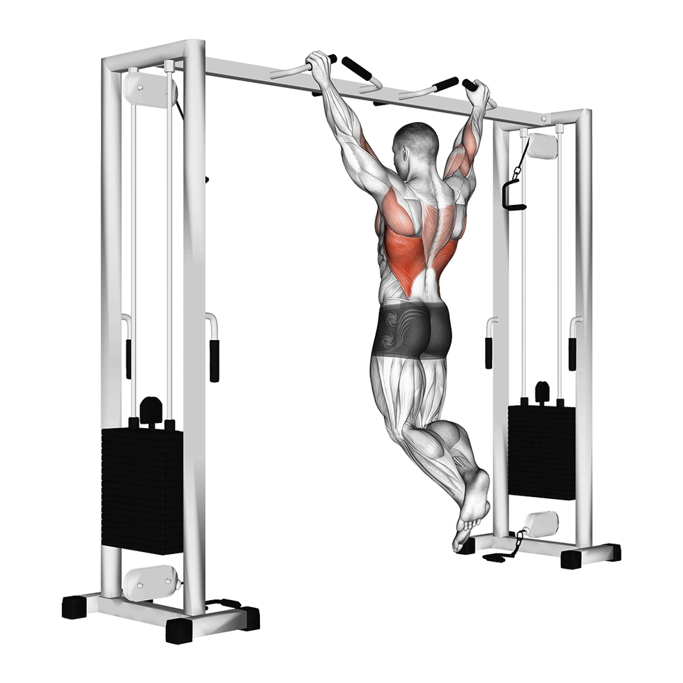
Como fazer:
- Segure a barra fixa com as mãos em pronado, um pouco mais afastadas que a largura dos ombros
- Pendure-se na barra com os braços estendidos
- Puxe o corpo para cima até que o queixo ultrapasse a barra
- Desça lentamente até a posição inicial
Quadríceps

Como fazer:
- Fique em pé com os pés na largura dos ombros
- Desça o corpo como se fosse sentar, mantendo o peso nos calcanhares
- Agache até que as coxas fiquem paralelas ao chão
- Volte à posição inicial, empurrando com os calcanhares
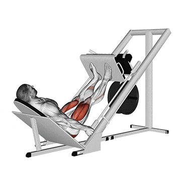
Como fazer:
- Sente-se na máquina de leg press e ajuste o banco
- Coloque os pés na plataforma, na largura dos ombros
- Desça a plataforma controladamente, flexionando os joelhos
- Empurre a plataforma para cima até estender completamente as pernas

Como fazer:
- Sente-se na máquina extensora e ajuste o apoio para os pés
- Coloque os pés sob o apoio, na largura dos ombros
- Estenda as pernas, contraindo os quadríceps
- Retorne lentamente à posição inicial
Posterior
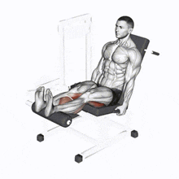
Como fazer:
- Sente-se na máquina flexora e ajuste o apoio para os pés
- Coloque os pés sob o apoio, na largura dos ombros
- Flexione as pernas, trazendo os calcanhares em direção aos glúteos
- Retorne lentamente à posição inicial
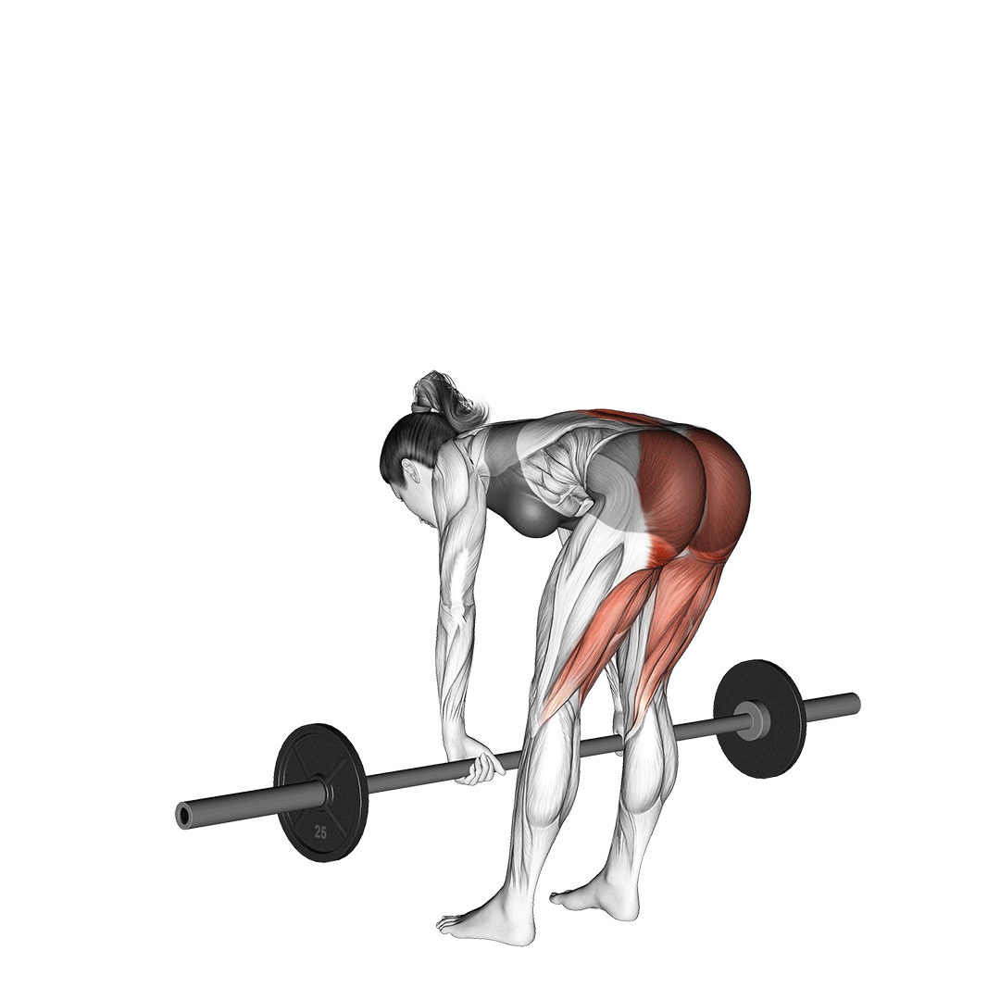
Como fazer:
- Fique em pé com os pés na largura dos ombros
- Segure uma barra ou halteres na frente das coxas
- Incline o tronco para frente, mantendo as costas retas
- Retorne à posição inicial, contraindo os glúteos
Panturrilha
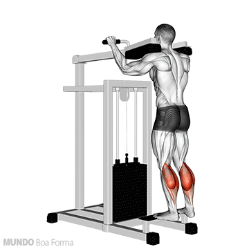
Como fazer:
- Fique em pé com os pés na largura dos ombros
- Eleve os calcanhares, ficando na ponta dos pés
- Desça lentamente até sentir um leve alongamento na panturrilha

Como fazer:
- Sente-se na máquina de panturrilha com os pés na largura dos ombros
- Coloque o apoio sobre os joelhos
- Eleve os calcanhares, contraindo a panturrilha
- Desça lentamente até sentir um leve alongamento na panturrilha
Ombros

Como fazer:
- Sente-se em um banco com encosto, segurando uma barra ou halteres
- Levante o peso acima da cabeça, estendendo completamente os braços
- Desça o peso até a altura dos ombros, controladamente
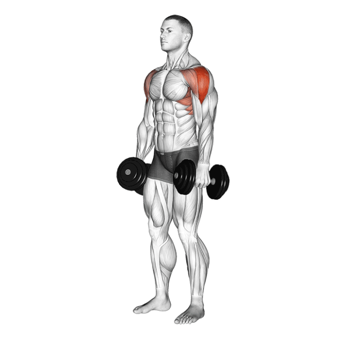
Como fazer:
- Fique em pé segurando um halter em cada mão ao lado do corpo
- Eleve os halteres lateralmente até a altura dos ombros
- Desça lentamente os halteres até a posição inicial
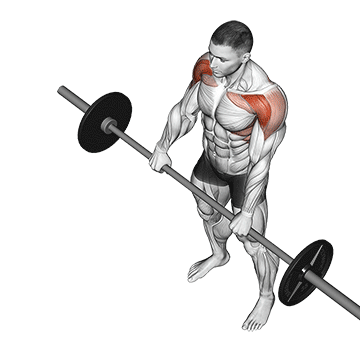
Como fazer:
- Fique em pé segurando um halter em cada mão na frente das coxas
- Eleve os halteres para frente até a altura dos ombros
- Desça lentamente os halteres até a posição inicial
Tríceps
Como fazer:
- Sente-se em um banco com encosto (ou fique em pé, se preferir).
- Segure um halter com as duas mãos — apoiando uma das extremidades na palma e entrelaçando os polegares em torno do cabo.
- Leve o halter acima da cabeça, com os braços totalmente estendidos e os cotovelos próximos às orelhas.
- Mantenha o tronco ereto, o abdômen firme e o olhar à frente.
- Inspire e flexione lentamente os cotovelos, abaixando o halter atrás da cabeça em um movimento controlado.
- Mantenha os cotovelos fixos — eles devem apontar para o teto, sem se abrir para os lados.
- Quando sentir o alongamento máximo no tríceps (halter próximo à nuca), estenda os cotovelos para elevar o halter de volta à posição inicial.
- Expire durante a subida, contraindo o tríceps no topo do movimento.
Como fazer:
- Deite-se em um banco reto, com os pés firmes no chão e o corpo estável.
- Segure uma barra reta, barra W ou dois halteres, com as palmas voltadas para frente (pegada supinada).
- Estenda os braços acima do peito, mantendo os cotovelos alinhados aos ombros e ligeiramente fechados (não abertos para os lados).
- Mantenha o abdômen firme e os ombros fixos contra o banco.
- Inspire e flexione lentamente os cotovelos, abaixando a barra (ou halteres) em direção à testa — o movimento ocorre somente nos cotovelos.
- Mantenha os cotovelos apontados para cima durante todo o movimento, sem deixá-los se abrir.
- Quando a barra (ou halteres) estiver próxima à testa, estenda novamente os cotovelos, elevando o peso até a posição inicial.
- Expire ao subir, contraindo bem o tríceps no topo.
Como fazer:
- Ajuste o cabo baixo da máquina de pulley e conecte uma corda ao mosquetão.
- Segure as pontas da corda com as palmas voltadas uma para a outra (pegada neutra).
- Dê um pequeno passo à frente e incline o tronco levemente, mantendo as costas retas e o abdômen firme.
- Flexione os cotovelos em aproximadamente 90°, mantendo-os junto ao corpo — essa é a posição inicial.
- Inspire e estenda os cotovelos, empurrando as pontas da corda para trás até que os braços fiquem totalmente estendidos.
- No final do movimento, afaste levemente as pontas da corda para aumentar a contração dos tríceps.
- Contraia bem o tríceps por 1 segundo no topo da extensão.
- Expire enquanto retorna lentamente à posição inicial, flexionando os cotovelos de forma controlada.
Como fazer:
- Sente-se na beira de um banco reto e apoie as mãos ao lado do quadril, com os dedos voltados para frente.
- Estenda as pernas à frente, mantendo os calcanhares apoiados no chão e o corpo levemente afastado do banco.
- Mantenha o tronco ereto, o olhar à frente e os cotovelos estendidos, sustentando o peso do corpo com os braços.
- (Versão avançada: Apoie os pés em outro banco à frente, deixando as pernas paralelas ao chão.)
- Inspire e flexione os cotovelos, abaixando lentamente o corpo em direção ao chão até formar um ângulo de 90° entre o braço e o antebraço.
- Mantenha os cotovelos apontados para trás, próximos ao corpo — não os abra para os lados.
- Quando atingir o ponto mais baixo, empurre o corpo para cima estendendo os cotovelos, até retornar à posição inicial.
- Expire ao subir, contraindo o tríceps no topo do movimento.
Como fazer:
- Ajuste a polia alta da máquina e conecte uma corda (ou barra reta/W, conforme a variação).
- Fique em pé, com os pés afastados na largura dos ombros e o tronco levemente inclinado para a frente.
- Segure as pontas da corda com as palmas voltadas uma para a outra (pegada neutra) ou a barra com palmas voltadas para baixo (pegada pronada).
- Mantenha os cotovelos próximos ao corpo e os antebraços flexionados em 90° — essa é a posição inicial.
- Deixe o abdômen firme e os ombros relaxados.
- Inspire e estenda os cotovelos, empurrando a corda (ou barra) para baixo até que os braços fiquem totalmente estendidos.
- No final do movimento, afaste levemente as pontas da corda para maximizar a contração dos tríceps (caso use corda).
- Contraia o tríceps no ponto mais baixo e segure por 1 segundo.
- Expire enquanto retorna lentamente à posição inicial, flexionando os cotovelos até 90°, sem mover os ombros.
Bíceps

Como fazer:
- Fique em pé, com os pés afastados na largura dos ombros.
- Segure a barra com as palmas voltadas para frente (pegada supinada), mãos na largura dos ombros.
- Mantenha os braços estendidos ao longo do corpo e os cotovelos próximos ao tronco.
- Deixe o abdômen contraído e as costas retas, sem arquear ou inclinar o corpo.
- Inspire e, de forma controlada, flexione os cotovelos, elevando a barra em direção aos ombros.
- Mantenha os cotovelos fixos, evitando movimentar os ombros ou usar impulso.
- Ao chegar no ponto mais alto, contraia bem os bíceps.
- Expire enquanto desce lentamente a barra até a posição inicial, controlando o movimento até quase estender totalmente os braços (sem travar os cotovelos).
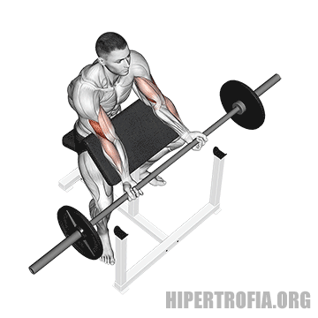
Como fazer:
- Sente-se no banco da rosca Scott e apoie a parte superior dos braços na almofada inclinada.
- Segure um halter em cada mão, com as palmas voltadas para cima (pegada supinada) ou levemente inclinadas (pegada neutra, se preferir trabalhar o braquiorradial).
- Mantenha os pés firmes no chão, o tronco reto e os braços completamente estendidos, sem travar os cotovelos.
- Inspire e, de forma controlada, flexione os cotovelos, levantando simultaneamente os halteres em direção aos ombros.
- Mantenha os braços apoiados na almofada durante todo o movimento — evite tirar os cotovelos do apoio.
- No topo, contraia bem os bíceps por 1 segundo.
- Expire enquanto desce lentamente os halteres até quase estender os braços novamente, controlando o peso e mantendo tensão contínua nos músculos.
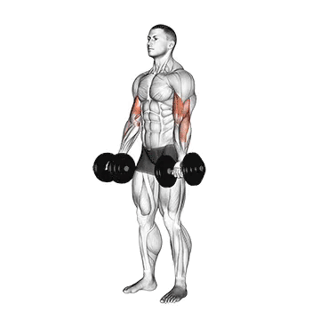
Como fazer:
- Fique em pé, com os pés afastados na largura dos ombros.
- Segure um halter em cada mão, com os braços estendidos ao longo do corpo e as palmas voltadas para frente.
- Mantenha os cotovelos próximos ao tronco, ombros relaxados e postura ereta (sem arquear as costas).
- Inspire e, de forma controlada, flexione simultaneamente os cotovelos, levantando os halteres em direção aos ombros.
- Concentre o esforço nos bíceps, evitando balançar o corpo ou usar impulso.
- Quando os halteres estiverem próximos aos ombros, faça uma breve contração dos bíceps.
- Expire enquanto desce lentamente os halteres à posição inicial, controlando o movimento até a extensão completa dos braços (sem travar os cotovelos).

Como fazer:
- Fique em pé, com os pés afastados na largura dos ombros.
- Segure um halter em cada mão, com as palmas voltadas para dentro (pegada neutra), braços estendidos ao longo do corpo.
- Mantenha o abdômen firme, as costas retas e os cotovelos próximos ao tronco.
- Inspire e, de forma controlada, flexione os cotovelos, elevando os halteres ao mesmo tempo em direção aos ombros — sem girar os punhos.
- Mantenha os cotovelos fixos e os ombros estáveis durante todo o movimento.
- No topo, contraia bem os bíceps e o braquiorradial (parte lateral do braço) por 1 segundo.
- Expire enquanto abaixa lentamente os halteres até a posição inicial, controlando o movimento até a extensão quase completa dos braços.
Como fazer:
- Sente-se na ponta de um banco reto, com as pernas afastadas.
- Segure um halter com uma das mãos (pegada supinada — palma voltada para cima).
- Apoie o cotovelo na parte interna da coxa da mesma perna, próximo ao joelho.
- Deixe o braço estendido, o halter próximo ao chão, mantendo o tronco levemente inclinado à frente e o abdômen firme.
- A outra mão pode apoiar-se na coxa oposta para dar estabilidade.
- Inspire e, de forma controlada, flexione o cotovelo, elevando o halter em direção ao ombro.
- Mantenha o cotovelo fixo contra a perna — o movimento deve vir apenas do antebraço.
- No topo do movimento, contraia fortemente o bíceps por 1 segundo.
- Expire enquanto abaixa lentamente o halter até quase estender o braço, sem relaxar completamente o músculo.
- Após terminar as repetições, troque de braço e repita o mesmo procedimento.
Como fazer:
- Fique em pé, com os pés afastados na largura dos ombros.
- Segure um halter em cada mão, com os braços estendidos ao longo do corpo e as palmas voltadas para dentro (pegada neutra).
- Mantenha o abdômen firme, o tronco ereto e os cotovelos próximos ao corpo.
- Inspire e flexione um dos cotovelos, elevando o halter em direção ao ombro.
- À medida que o halter sobe, gire o punho gradualmente para que, no topo do movimento, a palma da mão fique voltada para cima (supinada).
- Contraia o bíceps no ponto mais alto e segure por 1 segundo.
- Expire enquanto abaixa lentamente o halter até a posição inicial, retornando o punho à posição neutra.
- Repita o movimento com o outro braço, alternando os lados a cada repetição.
Antebraço
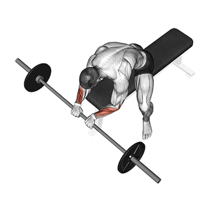
Como fazer:
- Sente-se em um banco, com os pés apoiados no chão e as pernas ligeiramente afastadas.
- Segure um halter em cada mão (ou uma barra leve), com as palmas voltadas para cima (pegada supinada).
- Apoie os antebraços sobre as coxas, deixando apenas os punhos para fora dos joelhos.
- Mantenha as mãos alinhadas com os antebraços e o tronco ereto.
- Inspire e abaixe lentamente os halteres, permitindo que os punhos se estendam para baixo (sem soltar o peso).
- Em seguida, flexione os punhos para cima, elevando o peso o máximo possível e contraindo os músculos do antebraço.
- Expire no final da subida e segure 1 segundo no topo da contração.
- Retorne lentamente à posição inicial, controlando a descida.